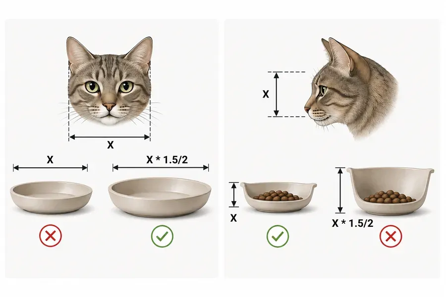

Hrana i voda
Napravite idealno mjesto za hranjenje svoje mačke, vodeći računa o udobnosti i prirodnim potrebama.
1. Izbor činija
Materijal je važan. Plastika skuplja bakterije i može izazvati akne na bradi. Preporučeni materijali: staklo, keramika i nerđajući čelik.
2. Idealno mjesto
Mačke vole navike i sigurnost. Nikad ne stavljajte hranu blizu toaleta.
- Miran kutak bez promaje;
- Daleko od bučnih uređaja;
- Pogled na sobu radi osjećaja sigurnosti.
3. Udobna visina
Činije na postolju smanjuju opterećenje vrata i zglobova, naročito kod starijih mačaka. Nagib činije pod pravim uglom od 15 stepeni čini gutanje prirodnijim. Izaberite visinu prema visini mačke dok stoji.

4Savjet: dimenzije činije
Savjet
Širina činije: unutrašnji prečnik treba da bude bar 1.5–2 puta širi od lica mačke (sa brkovima). Za većinu odraslih mačaka optimalan prečnik je 15–18 cm; za velike rase (kao što je mejn kun) 18–22 cm. Ako je prečnik manji od 12–13 cm, brkovi mačke će stalno dodirivati ivice.
Dubina činije: 2–4 cm je idealno i za suvu i za vlažnu hranu. Visina ivice treba da bude oko 1/2–3/4 visine lica mačke. Ivice više od 5–6 cm pogodne su samo za veće količine hrane i manje su praktične za svakodnevno hranjenje.

5Čišćenje i održavanje fontane za vodu za mačke
Uvod
Ovo je moje lično iskustvo s čišćenjem i održavanjem fontane za vodu za mačke. Želim vam ispričati o sredstvima za čišćenje, alatima i načinima čišćenja koje sam koristim.
Odluka o tome kako čistiti fontanu i osigurati udobnost i dobrobit vaše mačke ostaje na vama. Prije upotrebe sredstava za čišćenje pročitajte preporuke proizvođača i uvjerite se da odabrani proizvodi odgovaraju vašem modelu fontane.
1. Sredstva za čišćenje i alati
Sredstvo br. 1
Sredstvo za pranje posuđa koje koristim za prethodno čišćenje fontane. Pomaže da se uklone sluzave naslage i površinska prljavština.
- Denkmit Ultra Sensitive
- Sodasan Sensitive
- Sonett Sensitiv
- Ecover Zero
- ATTITUDE Little Ones
- i sl. — slični proizvodi u vašem gradu
Sredstvo br. 2
Sredstvo za obradu plastičnih površina koje dolaze u dodir s pitkom vodom, koje treba koristiti prema uputi proizvođača. Koristim ga razrijeđenog da potopim pojedine dijelove fontane.
- membraclean Drinking Water Treatment „Tierisch gut“
- Purogene
- Micropur Forte
- Yachticon Aqua Clean
- Milton
- i sl. — slični proizvodi u vašem gradu. VAŽNO — poštujte uputu proizvođača i kompatibilnost s površinom koja se obrađuje i dobro isperite površine nakon obrade.
Potrebni alati
Za čišćenje će mi trebati:
- Mala četka za čišćenje s vlaknima srednje tvrdoće.
- Obična spužva s mekanom stranom.
- Posebna posuda u koju stanu svi rastavljeni dijelovi fontane.
- Tanjir ili druga čista površina za privremeno odlaganje filtera.
Kako odabrati četku za čišćenje?
Važno je da odaberete četku što manjeg prečnika. Njome se mogu očistiti uski kanali i teško dostupna mjesta fontane i pumpe.
2. Mjere sigurnosti
Pri radu sa sredstvima za čišćenje važno je pridržavati se potrebnih mjera opreza. Ja lično uvijek koristim zaštitne rukavice.
Prije upotrebe pažljivo pročitajte upute proizvođača odgovarajućih sredstava. Poštujte preporučene omjere razrjeđivanja, vrijeme djelovanja i ostale sigurnosne upute.
Dodatne mjere zaštite treba birati uzimajući u obzir svojstva korištenih proizvoda i preporuke proizvođača.
Ne miješajte različita sredstva za čišćenje međusobno, osim ako proizvođači to izričito ne dozvoljavaju.
Budući da je fontana namijenjena davanju pitke vode životinji, potrebno je uvjeriti se da korištena sredstva odgovaraju za čišćenje tih površina. Nakon obrade dobro isperite sve dijelove kako biste uklonili ostatke sredstava za čišćenje.
3. Priprema fontane
Prije početka čišćenja isključujem fontanu iz struje i rastavljam je na pojedinačne dijelove.
Sve skidive dijelove treba odvojiti jedne od drugih kako bi se temeljito očistila svaka površina, uključujući teško dostupna mjesta.
Prije početka čišćenja treba izvaditi i filtere.
Ako planirate ponovo koristiti filtere, stavite ih tokom čišćenja na suhu, čistu površinu.
Ako ćete staviti novi filter, prethodno ga isperite pod mlazom vode prema uputi proizvođača.
4. Prethodno čišćenje
Za prvu fazu čišćenja koristim sredstvo br. 1 i običnu spužvu.
Mekanom stranom spužve čistim sve površine fontane. U ovoj fazi uklanjam sluzave naslage i glavnu površinsku prljavštinu.
Važno je čistiti ne samo vanjske površine i lako dostupna mjesta, nego i unutrašnje dijelove na kojima se može nakupiti prljavština.
Čišćenje pumpe
Posebnu pažnju posvećujem pumpi, jer se i u njoj mogu nakupiti sluz i druga prljavština.
Da biste došli do rotora pumpe, treba skinuti vanjsku zaštitnu rešetku. Nakon toga postaju dostupne lopatice rotora, koje se mogu pažljivo očistiti četkom.
Četka malog prečnika omogućava da se dođe čak i do teško dostupnih mjesta.
Po potrebi pažljivo četkom čistim i izlazni kanal pumpe, kroz koji voda ide u fontanu.
Pazite da ne oštetite unutrašnje komponente. Ne potapajte pumpu u vodu, osim ako proizvođač to izričito ne dozvoljava.
5. Potapanje pojedinih dijelova
Nakon prethodnog čišćenja stavljam rastavljene dijelove fontane u posebnu posudu i dodajem vodu s razrijeđenim sredstvom br. 2.
U mom slučaju koristim omjere proizvođača za tri litra vode u posudi.
U mom slučaju ostavljam dijelove u rastvoru 20 minuta prema uputi proizvođača. Pri tome svi dijelovi koji se smiju potapati moraju biti potpuno prekriveni tekućinom.
Obratite pažnju: navedena doza i vrijeme djelovanja zasnovani su na mom ličnom iskustvu. Prije upotrebe obavezno provjerite preporuke proizvođača, posebno preporučenu koncentraciju, vrijeme djelovanja i kompatibilnost sredstva s materijalima fontane.
Ne potapajte pumpu i druge električne komponente, osim ako to nije izričito predviđeno uputom proizvođača.
6. Temeljno ispiranje
Nakon potapanja nekoliko puta dobro isperem sve dijelove pod mlazom vode.
U ovoj fazi važno je ukloniti sve ostatke sredstava za čišćenje i rastvorenu prljavštinu sa svih površina i dijelova.
Posebnu pažnju treba posvetiti sljedećim mjestima:
- Unutrašnjim kanalima i uskim otvorima.
- Lopaticama rotora i dostupnim unutrašnjim dijelovima pumpe.
- Izlaznom kanalu pumpe.
- Mjestima na kojima se može nakupiti sluz.
- Površinama koje su u neposrednom dodiru s pitkom vodom.
Prije sklapanja fontane uvjerite se da su svi dijelovi dobro isprani i da na njima nije ostao trag sredstava za čišćenje.
7. Postavljanje filtera
Nakon čišćenja vraćam filtere ili koristim nove.
Ako ste privremeno izvadili filtere i planirate ih ponovo koristiti, pridržavajte se preporuka proizvođača o uvjetima čuvanja. Tokom čišćenja stavljam filtere na suh, čist tanjir.
Ako postavljate novi filter, prethodno ga isperite pod mlazom vode prema uputi proizvođača.
Ovo je posebno važno za filtere s aktivnim ugljem, jer pri prvom ispiranju iz njih može izlaziti ugljena prašina.
Mogućnost ponovne upotrebe filtera zavisi od njegove vrste i preporuka proizvođača. Ako proizvođač propisuje zamjenu filtera, ne treba ga ponovo postavljati samo zato što izvana izgleda čisto.
8. Koliko često čistim fontanu
Pridržavam se sljedećeg rasporeda održavanja.
Jednom sedmično: potpuno ručno čišćenje fontane uz upotrebu oba sredstva za čišćenje i četke.
Jednom u dvije sedmice: zamjena filtera — i filtera pumpe i velikog bijelog filtera unutar fontane.
Važno: intervali zamjene mogu se razlikovati zavisno od proizvođača, kvaliteta vode i stepena zaprljanosti. Zato se dodatno vodite uputom za vaš model fontane.
9. Punjenje fontane
Kod mog modela fontane jedno punjenje baterije obično traje oko dvije sedmice rada u režimu senzora pokreta.
Ovo je moje lično iskustvo. Stvarno trajanje baterije može se razlikovati zavisno od modela, stanja baterije i intenziteta korištenja.
Važna napomena
Ovaj članak opisuje moj lični pristup čišćenju fontane za vodu za mačke i nije univerzalna preporuka za sve modele.
Prije upotrebe sredstava za čišćenje provjerite da li odgovaraju materijalima vašeg uređaja i da li su sigurna za površine koje dolaze u dodir s pitkom vodom vaše mačke.
Upute proizvođača fontane, filtera i sredstava za čišćenje uvijek imaju prednost.
Još u ovom odjeljku
Informacije u aplikaciji prikupljene su iz otvorenih izvora i iskustva vlasnika mačaka. One ne zamjenjuju savjet i pregled kod veterinara. Odluke o zdravlju i njezi ljubimca donosi vlasnik — ako ste u bilo kakvoj nedoumici, obratite se veterinaru.
Sve ovo postoji u aplikaciji Cat First
Članci, kontrolne liste i prva pomoć na telefonu, čak i bez interneta.